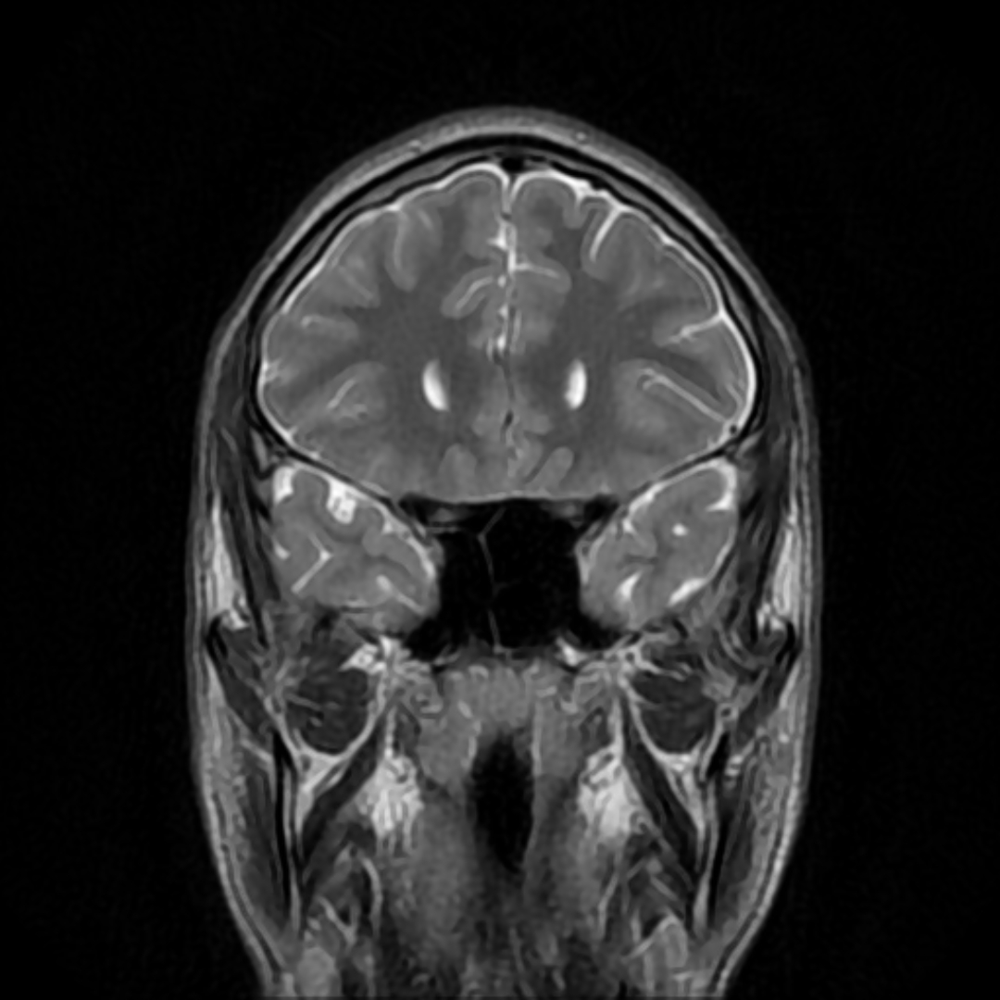

.jpg){kind=link}
Q1. Primeira crise de dor periorbitária em facada com ptose ipsilateral. Conduta conceitual:
Erro comum desmontado
Primária com cara de secundária
Ptose + dor que acorda = secundária sempre? Não — pode ser salva.
Etimologia salva
“Salva” como salva de palmas — período de crises recorrentes. Contraste: migrânea = metade do cérebro; tensional = tensão; salva = período em salva.
Atividade / remissão
Comportamento tipo atividade/remissão: dias/semanas com crises diárias (ou a cada 1–2 dias), depois remissão de semanas a meses sem dor. Se a primeira crise é hoje e nada for feito, amanhã e nos dias seguintes tendem a vir novas — período de atividade. Depois, “passe de mágica”, some por semanas–meses.
Profilaxia para todos
Por esse comportamento, a profilaxia da salva é indicada para TODOS. Crise hoje sem profilaxia → dor volta em poucos dias.
Primária com cara de alarme
A salva é primária, mas costuma cursar com “sinais de alarme”: dor que atinge intensidade muito alta rapidamente (pode lembrar trovoada), ptose (parece focal), dor que acorda. Pode alterar o exame (autonômicos/ptose) embora seja primária.
Na primeira crise com esse padrão: muito provavelmente é salva, mas pede-se neuroimagem “por via das dúvidas” — fenômeno vascular pode simular. A imagem não transforma a salva em secundária; é precaução.
Bordão
Primária com cara de secundária.

511KeV, via Wikimedia Commons — CC BY-SA 4.0 · fonte
Primária com cara de secundária
Uma RM sem lesão estrutural é compatível com a hipótese primária; a indicação na primeira crise permanece uma medida de precaução.
Quiz
Q2. Por que a profilaxia da salva é “para todos”?